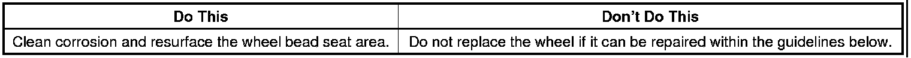
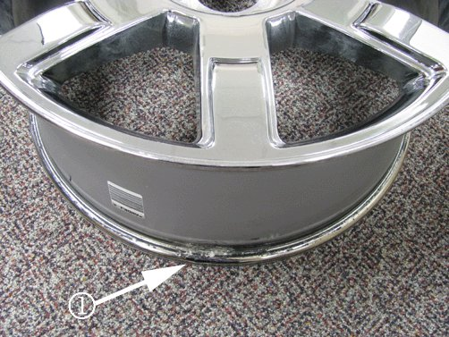
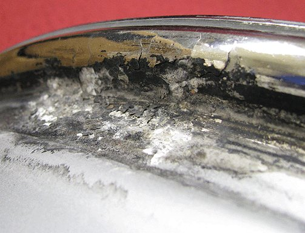
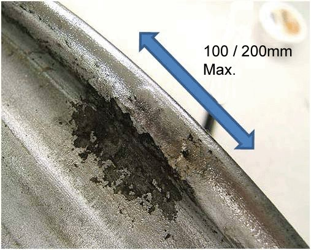
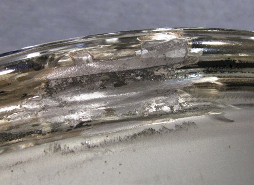
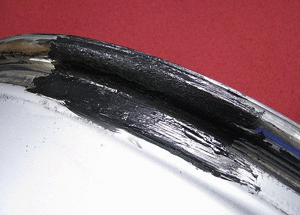
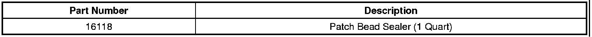
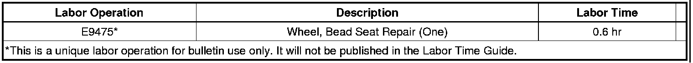

Tires/Wheels - Tire Slowly Goes Flat/Warning Light ON
TECHNICALBulletin No.: 08-03-10-006D
Date: November 02, 2011
Subject: Tire Slowly Goes Flat, Tire Air Loss, Low Tire Pressure Warning Light Illuminated, Aluminum Wheel Bead Seat Corrosion (Clean and Resurface Wheel Bead Seat)
Models:
2005-2013 GM Passenger Cars and Light Duty Trucks
Supercede:
This bulletin is being revised to add model years and update the first Notice statement under Correction. Please discard Corporate Bulletin Number 08-03-10-006C (Section 03 - Suspension).

Condition
Some customers may comment on a tire that slowly loses air pressure over a period of days or weeks.
Cause
Abrasive elements in the environment may intrude between the tire and wheel at the bead seat. There is always some relative motion between the tire and wheel (when the vehicle is driven) and this motion may cause the abrasive particles to wear the wheel and tire materials. As the wear continues, there may also be intrusion at the tire/wheel interface by corrosive media from the environment. Eventually a path for air develops and a 'slow' leak may ensue. This corrosion may appear on the inboard or outboard bead seating surface of the wheel. This corrosion will not be visible until the tire is dismounted from the wheel.
Notice
This bulletin specifically addresses issues related to wheel bead seat corrosion that may result in an air leak. For issues related to porosity of the wheel casting that may result in an air leak, please refer to Corporate Bulletin Number 05-03-10-006F - Low Tire Pressure, Leaking Cast Aluminum Wheels (Repair with Adhesive Sealant).
Correction
In most cases, this type of air loss can be corrected by following the procedure below.
Important
DO NOT replace a wheel for slow air loss unless you have evaluated and/or tried to repair the wheel with the procedure below.
Notice
The procedure below is not advised for in-warranty repairs of chromed aluminum wheels. Repair by this method may correct the condition but not provide a lasting cosmetic repair for chromed aluminum wheels. The procedure is acceptable for machined or painted Aluminum and Chrome Clad Wheels with adhered plastic facings. For customer pay repairs completed out of warranty, this procedure may be performed on chromed aluminum wheels as it will functionally correct air seepage issues at the bead seat and may be a viable alternative to replacing the wheel.
1. Remove the wheel and tire assembly for diagnosis. Refer to Tire and Wheel Removal and Installation in SI.
2. After a water dunk tank leak test, if you determine the source of the air leak to be around the bead seat of the wheel, dismount the tire to examine the bead seat. Shown below is a typical area of bead seat corrosion.
Typical Location of Bead Seat Corrosion

Important
Other forms of slow air leaks are possible. If the body of the tire, valve stem and wheel flange show no signs of air seepage, refer to Corporate Bulletin Number 05-03-10-003D for additional information on possible wheel porosity issues.
3. Bead seat corrosion is identified by what appears like blistering of the wheel finish, causing a rough or uneven surface that is difficult for the tire to maintain a proper seal on. Below is a close-up photo of bead seat corrosion on an aluminum wheel that was sufficient to cause slow air loss.
Close-Up of Bead Seat Corrosion

4. If corrosion is found on the wheel bead seat, measure the affected area as shown below.

- For vehicles with 32,186 km (20,000 mi) or less, the total allowable combined linear area of repairable corrosion is 100 mm (4 in) or less. If the total area(s) of corrosion exceed these dimensions, the wheel should be replaced.
- For vehicles that have exceeded 32,186 km (20,000 mi), the total allowable combined linear area of repairable corrosion is 200 mm (8 in) or less. If the total area(s) of corrosion exceed these dimensions, the wheel should be replaced.
5. In order to correct the wheel leak, use a clean-up (fine cut) sanding disc or biscuit to remove the corrosion and any flaking paint. You should remove the corrosion back far enough until you reach material that is stable and firmly bonded to the wheel. Try to taper the edge of any flaking paint as best you can in order to avoid sharp edges that may increase the chance of a leak reoccurring. The photo below shows an acceptable repaired surface.
Notice
Corrosion that extends up the lip of the wheel, where after the clean-up process it would be visible with the tire mounted, is only acceptable on the inboard flange. The inboard flange is not visible with the wheel assembly in the mounted position. If any loose coatings or corrosion extend to the visible surfaces on the FACE of the wheel, that wheel must be replaced.
Important
Remove ONLY the material required to eliminate the corrosion from the bead seating surface. DO NOT remove excessive amounts of material. ALWAYS keep the sealing surface as smooth and level as possible.
Acceptably Prepared (Cleaned-Up) Wheel Surface

6. Once the corrosion has been eliminated, you should coat the repaired area with a commercially available tire sealant such as Patch Brand Bead Sealant or equivalent. Commercially available bead sealants are black rubber-like coatings that will permanently fill and seal the resurfaced bead seat. At 21°C (70°F) ambient temperature, this sealant will set-up sufficiently for tire mounting in about 10 minutes.
Coated and Sealed Bead Seat

7. Remount the tire and install the repaired wheel and tire assembly. Refer to Tire and Wheel Removal and Installation in SI.
Parts Information
Patch Brand Bead Sealer is available from Myers Tires at 1-800-998-9897 or on the web at www.myerstiresupply.com. The one-quart size can of sealer will repair about 20 wheels.

Warranty Information

For vehicles repaired under warranty, use the table.

Disclaimer